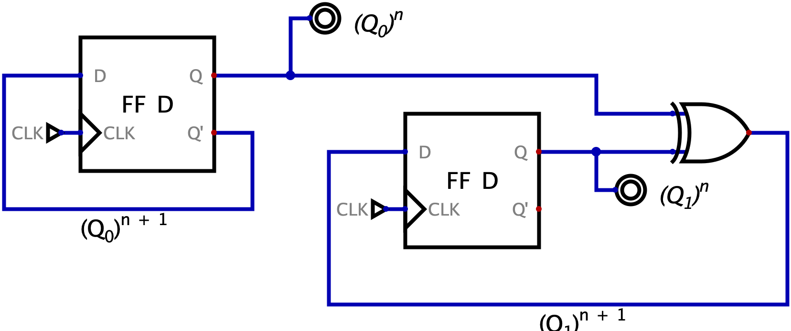

Definizione - Registro a \( k\) bit
Un registro a \( k\) bit è una rete sequenziale sincrona in grado di memorizzare un dato di \( k\) bit.  Esso è caratterizzato da:
Esso è caratterizzato da: 
- un ingresso \( CLK\) per il segnale di clock;
- un bus di \( k\) segnali sincroni in ingresso \( IN[k-1, \ldots, 0]\);
- un ingresso sincrono \( WE\) ("Write Enable") per permettere la sovrascrittura del dato precedentemente memorizzato (con \( WE = 0\) ad ogni fronte di clock rimane il segnale memorizzato in precedenza);
- un segnale asincrono \( A\_RESET\) ("Asynchronous RESET") che, se attivo, pone a \( 0\) tutti i bit memorizzati.
- se \( WE = 1\), il flip-flop deve memorizzare l'ingresso \( IN\);
- se \( WE = 0\), il flip-flop deve memorizzare il valore precedente, ovvero \( Q\).
Osservazioni personali - Uno (registro), nessuno (registro) e centomila (registri)...
Partendo dai requisiti sopracitati, è possibile realizzare diversi registri che differiscono per:
- i comandi disponibili (ad esempio potrebbe non essere presente l'ingresso \( A\_RESET\));
- la sincronicità (o asincronicità) dei comandi (ad esempio un registro con l'ingresso \( RESET\) sincrono);
- l'ordine di priorità dei comandi (ad esempio, nel caso di un segnale \( RESET\) sincrono, se esso ha priorità maggiore rispetto al \( WE\)).
Esempio - Sintesi diretta - Flip-flop T
Realizzare una rete sincrona secondo Moore caratterizzata da:
- un unico ingresso sincrono \( T\);
- un bit in memoria che commuta ("toggle") ad ogni ciclo di clock in cui \( T = 1\);
- due uscite \( Q\) e \( Q'\) che forniscono il bit memorizzato (in forma vera e negata).
- con \( T = 0\) si continua a memorizzare \( Q\);
- con \( T = 1\) si memorizza \( Q'\).
Esempio - Sintesi diretta - Accumulatore
Realizzare una rete sincrona secondo Moore che ad ogni ciclo di clock somma il valore fornito sull'ingresso \( I[k -1 , \ldots, 0]\) di \( k\) bit al valore memorizzato. Ad ogni ciclo di clock la rete deve fornire sull'uscita \( OUT[k - 1, \ldots, 0]\) il valore attualmente in memoria. Si consideri inoltre un ulteriore ingresso \( INIT\) che permette di inizializzare il valore memorizzato. La rete è quindi caratterizzata da:
Si ha infine un gate AND che, in base al valore dell'ingresso INIT, annulla o "lascia passare" il risultato dell'adder.
- un bus di \( k\) segnali sincroni in ingresso \( I[k-1, \ldots, 0]\) che rappresenta un numero unsigned;
- un ingresso sincrono \( INIT\) che permette di inizializzare il valore memorizzato (\( INIT = 1\))
- un'uscita \( OUT[k - 1, \ldots, 0]\) che fornisce il valore memorizzato.
Si ha quindi un flip-flop in retroazione che memorizza ad ogni ciclo di clock il valore corrente. Ad ogni ciclo, inoltre, si ha che un adder effettua la somma tra il valore memorizzato in precedenza e il valore fornito in ingresso.
Si ha infine un gate AND che, in base al valore dell'ingresso INIT, annulla o "lascia passare" il risultato dell'adder.
Esempio - Sintesi diretta di una RSS
Realizzare una rete sincrona secondo Moore caratterizzata da:
Per completare la rete è ora sufficiente creare le reti combinatorie che costruiscono \( NGE12\) e \( NLT8\):
- un bus di \( 4\) segnali in ingresso \( N[3,2,1,0]\) che rappresenta un numero unsigned;
- un uscita \( Z\) che ha valore \( 1\) se \( N\) rappresenta un numero di valore maggiore o uguale a \( 12)_{10}\). L'uscita deve mantenere valore \( Z = 1\) fino a che \( N\) non rappresenta un valore inferiore a \( 8)_{10}\). Negli altri momenti, l'uscita deve avere valore \( 0\);
- l'uscita inizialmente a \( 0\).
- se \( N \geq 12\) è sicuro che \( Z = 1\);
- se \( N \lt 8\) è sicuro che \( Z = 0\);
- se \( 8 \leq N \lt 12\) la rete ha il valore che ha assunto in precedenza (in quanto se in precedenza \( Z = 1\) si ha che \( N\) sta "decrescendo", altrimenti sta "crescendo").
- una rete che verifica se \( N \geq 12\), rappresentata dal segnale \( NGE12\) ("N Greater or Equals 12");
- una rete che verifica se \( N \lt 8\), rappresentata dal segnale \( NLT8\) ("N Less Than 8");
- una rete che memorizza l'ultimo valore assunto dalla rete (inizialmente \( 0\));
ovvero, se la rete è in uno degli intervalli sicuri (\( N \geq 12\) o \( N \lt 8\)) allora si deve memorizzare \( NGE12\), altrimenti il valore che si era memorizzato in precedenza.
Per completare la rete è ora sufficiente creare le reti combinatorie che costruiscono \( NGE12\) e \( NLT8\):
- in binario si ha che il numero \( 12)_{10}\) è rappresentato come \( 1100)_{2}\), si avrà quindi che i numeri maggiori o uguali a \( 12\) sono caratterizzati dal mintermine \( NGE12 = N3 \cdot N2\);
- in binario si ha che il numero \( 8)_{10}\) è rappresentato come \( 1000)_{2}\), si avrà quindi che i numeri minori di \( 8\) sono caratterizzati dal mintermine \( NLT8 = N3'\).
Definizione - Logical Shift Register
Un Logical Shift Register è una rete logica sincrona in grado di memorizzare gli ultimi \( k\) bit ricevuti.  I possibili ingressi di questo componente sono:
I possibili ingressi di questo componente sono:
L'implementazione del comportamento base (ovvero di uno shift register dotato dei soli ingressi \( EN\) e \( IN\) con scorrimento a destra) è molto semplice e sfrutta il fatto che nei flip-flop il tempo di hold è minore del tempo di risposta. Si ha infatti la seguente rete:
- un ingresso \( CLK\) per il segnale di clock;
- un ingresso sincrono \( LD\) che permette di caricare tutti i \( k\) bit forniti sull'ingresso \( I[...]\);
- un bus di \( k\) segnali sincroni in ingresso \( I[k - 1, \ldots, 0]\);
- un ingresso sincrono \( EN\) che regola se il registro deve continuare a mantenere i dati in memoria (\( EN = 0\)) oppure se effettuare lo "scorrimento" (\( EN = 1\));
- un ingresso sicrono \( IN\) che indica qual è il bit da inserire;
- un ingresso sincrono \( R/L'\) ("Right / Left'") che consente di variare la direzione dello shift.;
- un ingresso asincrono \( A\_RESET\) che carica
- se \( R/L'=1\) il bit \( IN\) viene inserito in posizione \( 0\) (ovvero immaginandolo come un array, nella cella più a sinistra);
- se \( R/L'=0\) il bit \( IN\) viene inserito in posizione \( k -1\) (ovvero immaginandolo come un array, nella cella più a destra);
L'implementazione del comportamento base (ovvero di uno shift register dotato dei soli ingressi \( EN\) e \( IN\) con scorrimento a destra) è molto semplice e sfrutta il fatto che nei flip-flop il tempo di hold è minore del tempo di risposta. Si ha infatti la seguente rete:
Osservazioni personali - Scorrimento a sinistra, scorrimento a destra
Immaginando un registro a \( k\) bit la cui memoria è la seguente
si hanno due possibili comportamenti:
- lo scorrimento a destra, ovvero si ha che il bit dell'ingresso \( IN\) è inserito in memoria nella posizione \( 0\). Il comportamento sarebbe quindi il seguente:
- lo scorrimento a sinistra, ovvero si ha che il bit dell'ingresso \( IN\) è inserito in memoria nella posizione \( k - 1\). Il comportamento sarebbe quindi il seguente:
Definizione - Universal Shift Register
Una versione possibile di Logical Shift Register è l'Universal Shift Register che implementa le varie funzionalità messe a disposizione dallo Shift Register con diversi ingressi, attraverso dei codici. Si ha quindi che, considerando il componente relativo alla seguente rete
i codici operativi sarebbero:
- \( S_{1} = 0\) e \( S_{0} = 0\) per il comando di "hold";
- \( S_{1} = 0\) e \( S_{0} = 1\) per il comando di "shit a destra";
- \( S_{1} = 1\) e \( S_{0} = 0\) per il comando di "shift a sinistra";
- \( S_{1} = 1\) e \( S_{0} = 1\) per il comando di "load";
Definizione - Comunicazione in serie e in parallelo
Quando si comunica un'informazione è possibile che questa "arrivi a destinazione" attraverso la sequenza di informazioni di un singolo segnale in sequenza (comunicazione seriale), oppure attraverso più segnali in contemporanea (comunicazione parallela).
Generalmente la comunicazione in parallelo risulta essere più efficiente anche se porta con sé diverse difficolta, tra cui:
Generalmente la comunicazione in parallelo risulta essere più efficiente anche se porta con sé diverse difficolta, tra cui:
- necessità di schermare le vie di comunicazione per evitare interferenze;
- necessità di un protocollo per gestire il sincronismo tra i segnali;
- impossibilità di mantenere la stabilità su lunghe distanze.
Definizione - Utilizzare uno Shift Register per la conversione da comunicazione seriale a parallela
Una rete che effettua la conversione tra comunicazione seriale e in parallelo secondo Moore è la seguente  Si avrà quindi che per ottenere un dato in parallelo di \( k\) bit da uno in serie sono necessari \( k\) flip-flop e ogni informazione è valida ogni \( k\) cicli di clock.
Si avrà quindi che per ottenere un dato in parallelo di \( k\) bit da uno in serie sono necessari \( k\) flip-flop e ogni informazione è valida ogni \( k\) cicli di clock.
È possibile realizzare anche la rete secondo Mealy nel seguente modo: In questo caso sono necessari \( k - 1\) flip-flop e l'informazione è valida ogni \( k - 1\) cicli di clock. Nonostante ciò si ottiene che una delle uscite non è "stabilizzata" dal flip-flop rendendola soggetta a possibili problemi.
In questo caso sono necessari \( k - 1\) flip-flop e l'informazione è valida ogni \( k - 1\) cicli di clock. Nonostante ciò si ottiene che una delle uscite non è "stabilizzata" dal flip-flop rendendola soggetta a possibili problemi.
In entrambi i casi si hanno reti equivalenti ad uno shift register, ovvero al componente privilegiato per questo compito
È possibile realizzare anche la rete secondo Mealy nel seguente modo:
In entrambi i casi si hanno reti equivalenti ad uno shift register, ovvero al componente privilegiato per questo compito
Definizione - Utilizzare uno Shift Register per la conversione da comunicazione parallela a seriale
Una rete che effettua la conversione tra comunicazione in parallelo e in serie secondo Moore è la seguente:  Si avrà quindi che ad ogni ciclo di clock sarà presente il bit desiderato sull'uscita \( OUT[0]\), nell'ordine \( 0\), \( 1\), \( \ldots\), \( k - 1\).
Si avrà quindi che ad ogni ciclo di clock sarà presente il bit desiderato sull'uscita \( OUT[0]\), nell'ordine \( 0\), \( 1\), \( \ldots\), \( k - 1\).
Definizione - Utilizzare uno Shift Register per effettuare moltiplicazioni e divisioni
Considerando un qualsiasi numero binario unsigned, si ha che il suo shift (e l'ingresso di uno \( 0\)) effettui una moltiplicazione (shift verso sinistra) o una divisione intera (shift verso destra) per \( 2\).
È quindi possibile svolgere delle moltiplicazioni tra numeri binari utilizzando delle reti sincrone (nonostante queste siano ottenibili anche da circuiti combinatori).
Ad esempio, considerando il numero binario \( 01101)_{2}\) (uguale a \( 13)_{10}\)) si ha che il suo shift verso sinistra
Si ha inoltre che il bit più significativo del numero da moltiplicare (in questo caso \( bit_{4}\)) indica se ci sarà overflow (nel caso esso sia \( 1\)). È quindi semplice utilizzare uno shift register per effettuare questa operazione.
È quindi possibile svolgere delle moltiplicazioni tra numeri binari utilizzando delle reti sincrone (nonostante queste siano ottenibili anche da circuiti combinatori).
Ad esempio, considerando il numero binario \( 01101)_{2}\) (uguale a \( 13)_{10}\)) si ha che il suo shift verso sinistra
è uguale a \( 11010)_{2}\), ovvero \( 26)_{2}\).
Si ha inoltre che il bit più significativo del numero da moltiplicare (in questo caso \( bit_{4}\)) indica se ci sarà overflow (nel caso esso sia \( 1\)). È quindi semplice utilizzare uno shift register per effettuare questa operazione.
Esempio - Sintesi diretta - \( k\) bit multiplier
Progettare una rete asincrona secondo Moore che effettui la moltiplicazione tra due numeri di \( k\) bit unsigned utilizzando shift register e adder. Si considerino quindi come fattori gli ingressi \( A[k - 1 , \ldots, 0]\) e \( B[k - 1, \ldots, 0]\) validi quando il segnale \( LD\) è uguale a \( 1\). Il risultato, fornito sull'uscita \( OUT[2 \cdot k - 1, \ldots, 0]\), deve essere disponibile fino a quando \( LD\) non assumera nuovamente valore \( 1\).
Per progettare la rete consideriamo l'algoritmo di moltiplicazione in colonna.
La rete sarà quindi così formata: dove \( B \ NOT \ 0\) è un segnale che indica se \( B\) è un numero non nullo (ovvero un OR con ogni bit di \( B\) in ingresso).
dove \( B \ NOT \ 0\) è un segnale che indica se \( B\) è un numero non nullo (ovvero un OR con ogni bit di \( B\) in ingresso).
Per progettare la rete consideriamo l'algoritmo di moltiplicazione in colonna.
Si ha che il risultato è la somma delle moltiplicazioni tra il primo fattore e ogni singola cifra del secondo (moltiplicata per il suo peso). Si avrà quindi che ogni addendo della somma avrà come valore quello del primo fattore moltiplicato per \( 2\) per un numero di volte uguale alla sua posizione. Ovvero
Un'idea potrebbe quindi essere effettuare lo shift (verso sinistra) di \( k\) volte del primo fattore (in modo da moltiplicarlo ogni volta per \( 2\)) e effettuare lo shift verso sinistra del secondo fattore (in modo da avere sempre il bit da moltiplicare nella stessa posizione). Ad ogni ciclo di clock si ottiene quindi una somma parziale che dovrà essere memorizzata in un accumulatore.
La rete sarà quindi così formata:
Definizione - Shift aritmetico
Per permettere la moltiplicazione e divisione di numeri signed è possibile utilizzare lo shift aritmetico.
Tale shift differisce di poco dallo shift logico, in particolare:
Tale shift differisce di poco dallo shift logico, in particolare:
- nella divisione (ovvero shift verso destra) è sufficiente che il bit inserito sia uguale al MSB del numero (ovvero al segno, che non può cambiare).
- nela moltiplicazione (ovvero shift verso sinistra) si continua ad aggiungere \( 0\). Tuttavia, per verificare l'overflow è sufficiente verificare che il segno del risultato sia uguale al segno del numero iniziale, o meglio, è necessario verificare che il MSB e il suo adiacente siano uguali.
Esempio - Sintesi diretta - Riconoscitore di sequenze con shift register
Progettare una rete sequenziale sincrona che controlla se gli ultimi tre byte inseriti nell'ingresso \( IN[7, \ldots, 0]\) mentre il segnale \( EN = 1\) sono stati \( FF)_{16}\), \( 27)_{16}\) e \( 30)_{16}\) (dove \( FF)_{16}\) è il primo byte della sequenza).
Nel caso la sequenza sia rispettata, nel periodo di clock successivo l'uscita \( OUT\) deve essere portata a \( 1\) e rimanere tale fino a che l'ingresso asincrono \( A\_RESET\) non è uguale a \( 1\): da quel momento la rete deve considerare che non fosse stato inserito alcun byte.
Innanzitutto la rete è di Moore in quanto deve rispondere al clock successivo all'ultimo inserimento nella sequenza.
Un modo (inefficiente) per riconoscere sequenze secondo Moore è porre degli Shift Register in serie per creare una coda che permetta di controllare ad ogni ciclo di clock se la sequenza è stata rispettata.
Dato che in ingresso si hanno \( 8\) bit ad ogni ciclo di clock, è necessario utilizzare \( 8\) shift register da \( 3\) bit in serie. In questo modo si avrà che:
Pensando ora al mantenimento dell'ingresso, si può lavorare utilizzando l'ingresso \( EN\_SHIFT\) per decidere quando abilitare lo shift register. \( EN\_SHIFT\) deve essere abilitato quando \( EN=1\) e \( OUT=0\). Si avrà quindi la seguente rete: Questa soluzione utilizza però un numero troppo elevato di componenti. È infatti sufficiente memorizzare solo se il byte è quello desiderato e per farlo conviene controllare inizialmente se il numero è quello corretto e memorizzarlo come singolo bit. Si avrà quindi la seguente rete:
Questa soluzione utilizza però un numero troppo elevato di componenti. È infatti sufficiente memorizzare solo se il byte è quello desiderato e per farlo conviene controllare inizialmente se il numero è quello corretto e memorizzarlo come singolo bit. Si avrà quindi la seguente rete: 
Nel caso la sequenza sia rispettata, nel periodo di clock successivo l'uscita \( OUT\) deve essere portata a \( 1\) e rimanere tale fino a che l'ingresso asincrono \( A\_RESET\) non è uguale a \( 1\): da quel momento la rete deve considerare che non fosse stato inserito alcun byte.
Innanzitutto la rete è di Moore in quanto deve rispondere al clock successivo all'ultimo inserimento nella sequenza.
Un modo (inefficiente) per riconoscere sequenze secondo Moore è porre degli Shift Register in serie per creare una coda che permetta di controllare ad ogni ciclo di clock se la sequenza è stata rispettata.
Dato che in ingresso si hanno \( 8\) bit ad ogni ciclo di clock, è necessario utilizzare \( 8\) shift register da \( 3\) bit in serie. In questo modo si avrà che:
- all'uscita \( OUT[2]\) di ogni registro si hanno tutti i bit inseriti \( 3\) cicli di clock fa;
- all'uscita \( OUT[1]\) di ogni registro si hanno tutti i bit inseriti \( 2\) cicli di clock fa;
- all'uscita \( OUT[0]\) di ogni registro si hanno tutti i bit inseriti \( 1\) ciclo di clock fa;
Pensando ora al mantenimento dell'ingresso, si può lavorare utilizzando l'ingresso \( EN\_SHIFT\) per decidere quando abilitare lo shift register. \( EN\_SHIFT\) deve essere abilitato quando \( EN=1\) e \( OUT=0\). Si avrà quindi la seguente rete:
Definizione - Monoimpulsore
Un monoimpulsore (detto anche "edge detector", ovvero rilevatore dei fronti) è una rete logica sincrona che emette in uscita un segnale alto, per un solo ciclo di clock, nel ciclo di clock successivo al fronte di salita dell'ingresso (ovvero passaggio da \( IN=0\) a \( IN=1\), nel caso sia "positive edge triggered" ). L'ingresso, che può essere anche asincrono, deve avere una frequenza di aggiornamento inferiore a quella del clock. Nel caso che il fronte di salita capiti nell'intervallo "tempo di setup"-"tempo di hold" (ovvero è molto vicino al fronte del clock), è accettabile segnalare il fronte con più di un clock di ritardo (a causa della metastabilità).
Un possibile montaggio del monoimpulsore positive edge triggered (ovvero sensibile ai fronti di salita) è il seguente: Il montaggio per un monoimpulsore negative edge triggered (ovvero sensibile ai fronti di discesa) è il seguente:
Il montaggio per un monoimpulsore negative edge triggered (ovvero sensibile ai fronti di discesa) è il seguente:
Nel caso l'uscita \( OUT\) sia utilizzata da una rete di Moore non ci sarebbe alcun problema in quanto gli ingressi sono "sincronizzati" dalla rete.
Per ottenere una rete (nel caso di una rete di Mealy) con meno probabilità di metastabilità è possibile aggiungere un ulteriore flip-flop, al costo però di avere un ritardo sull'aggiornamento dell'uscita.
Un possibile montaggio del monoimpulsore positive edge triggered (ovvero sensibile ai fronti di salita) è il seguente:
Con questo tipo di montaggio (ovvero utilizzando solo due flip-flop), si ha che nel caso non si rispettino i tempi del flip-flop, si avrebbe la metastabilità e il componente potrebbe subire un ritardo di un ciclo di clock.
Nel caso l'uscita \( OUT\) sia utilizzata da una rete di Moore non ci sarebbe alcun problema in quanto gli ingressi sono "sincronizzati" dalla rete.
Per ottenere una rete (nel caso di una rete di Mealy) con meno probabilità di metastabilità è possibile aggiungere un ulteriore flip-flop, al costo però di avere un ritardo sull'aggiornamento dell'uscita.
Osservazioni personali - Monoimpulsore errato
Il seguente montaggio
non è corretto. Infatti, nel caso \( IN\) fosse uguale a \( 1\) per più cicli di clock consecutivi, si avrebbe un cortocircuito in quanto l'uscita commuterebbe automaticamente più volte.
Osservazioni personali - A cosa serve un monoimpulsore?
In una RSS, un monoimpulsore è utile per rilevare (e poi sincronizzare) la pressione (utilizzandone uno positive edge triggered) o il rilascio (utilizzandone uno negative edge triggered) di un pulsante: esso rileverà solo "l'istante" in cui ciò avviene, e non tutta la "durata della pressione".
Definizione - Contatore binario senza ingressi x\( 4\)
Per realizzare un contatore binario senza ingressi x\( 4\) (ovvero che memorizza \( 4\) stati) sono necessari \( 2\) bit di stato (ovvero due flip-flop).
Per realizzare la logica di "incremento" è possibile utilizzare un \( n\) bit adder a cui è costantemente aggiunto il numero \( 1\). Tale realizzazione è però inefficiente, in quanto utilizza un numero elevato di componenti. Un adder, infatti, oltre alla logica di incremento implementa ulteriori funzionalità (come la gestione dell'ingresso riporto e di calcolarlo) mentre, in questo caso, non deve realizzarli.
Osservando la sequenza degli stati (dove con \( n\) si intende l'istante attuale e con \( n + 1\) l'istante successivo)
Si ha quindi che la migliore realizzazione è la seguente: Esistono diverse realizzazioni di contatori binari, differenti in base alla codifica di memorizzazione utilizzata (ad esempio la codifica Gray) ma anche in base al numero (e al tipo) di ingressi.
Per realizzare la logica di "incremento" è possibile utilizzare un \( n\) bit adder a cui è costantemente aggiunto il numero \( 1\). Tale realizzazione è però inefficiente, in quanto utilizza un numero elevato di componenti. Un adder, infatti, oltre alla logica di incremento implementa ulteriori funzionalità (come la gestione dell'ingresso riporto e di calcolarlo) mentre, in questo caso, non deve realizzarli.
Osservando la sequenza degli stati (dove con \( n\) si intende l'istante attuale e con \( n + 1\) l'istante successivo)
è possibile notare che il bit \( (Q_{0})^{n + 1}\) non è altro che il NOT del bit \( (Q_{0})^{n}\), mentre il bit \( (Q_{1})^{n + 1}\) è dato dallo XOR tra \( (Q_{1})^{n}\) e \( (Q_{0})^{n}\).
Si ha quindi che la migliore realizzazione è la seguente:

Definizione - Contatore binario con ingresso sincrono \( ENABLE\)
Un contatore con ingresso sincrono \( ENABLE\) è un contatore che:  Utilizzare tali componenti risulta però inefficiente, in quanto è possibile ottimizzarli:
Utilizzare tali componenti risulta però inefficiente, in quanto è possibile ottimizzarli:
- con \( ENABLE = 1\) svolge il regolare funzionamento (contando normalmente);
- con \( ENABLE = 0\) rimane costante al valore memorizzato;
- per il bit \( (Q_{0})^{n + 1}\) si ha che può essere così ottimizzato ovvero è possibile sostituirlo con un gate EXOR che con un ingresso a \( 0\) si comporta come identità rispetto all'altro ingresso mentre, con un bit a \( 1\) si comporta come un NOT.

- per il bit \( (Q_{1})^{n + 1}\) si ha che può essere così ottimizzato ovvero è possibile aggiungere un gate AND in ingresso. Con \( EN = 1\) esso porta in uscita l'ingresso \( Q_0\) (ovvero si ha il regolare funzionamento) mentre con \( EN = 0\) si ha come uscita dell'AND \( 0\) e il gate EXOR porta in uscita l'altro ingresso (che sarebbe il bit in uscita all'istante precedente).
Definizione - Contatore binario con ingresso sincrono \( RESET\)
Un contatore con ingresso sincrono \( RESET\) è un contatore che: 
- con \( RESET = 0\) svolge il regolare funzionamento (contando normalmente);
- con \( RESET = 1\) memorizza il valore \( 0\).
Definizione - Contatore binario con ingresso sincrono \( LOAD\)
Un contatore con ingresso sincrono \( LOAD\) è un contatore che: 
- con \( LOAD = 0\) svolge il regolare funzionamento (contando normalmente);
- con \( LOAD = 1\) memorizza i bit forniti sull'ingresso \( I[\ldots]\).
Definizione - Contatore binario con ingresso sincrono \( UP/DOWN'\)
Un contatore con ingresso sincrono \( UP/DOWN'\) è un contatore che:
Per realizzarlo è possibile considerare che il bit \( (Q_0)^{n + 1}\) commuta in ogni caso (indipendentemente se incrementa o decrementa) mentre si ha che il bit \( (Q_1)^{n + 1}\) assume il seguente comportamento:
- con \( U/D' = 1\) svolge il regolare funzionamento (incrementando il proprio stato interno);
- con \( U/D' = 0\) decrementa il proprio stato interno.
Per realizzarlo è possibile considerare che il bit \( (Q_0)^{n + 1}\) commuta in ogni caso (indipendentemente se incrementa o decrementa) mentre si ha che il bit \( (Q_1)^{n + 1}\) assume il seguente comportamento:
- nel caso dell'incremento, diventa \( 1\) quando il bit \( (Q_{0})^n = 1\) (in quanto incrementando aggiunge un bit di peso maggiore);
- nel caso del decremento, diventa \( 1\) quando il bit \( (Q_{0})^n = 0\) (in quanto decrementando è necessario diminuire il bit di peso maggiore);
Definizione - Contatore binario senza ingressi x\( 8\)
Per realizzare un contatore binario senza ingressi x\( 8\) (ovvero che memorizza \( 8\) stati) è sufficiente calcolare il bit \( (Q_2)^{n+1}\). Tale bit commuterà solo quando \( (Q_0)^n = 1\) e \( (Q_1)^n = 1\), ovvero quando \( (Q_0)^n \cdot (Q_1)^n\).
È quindi sufficiente replicare la logica utilizzata per il bit \( (Q_1)^{n + 1}\) (ovvero si ha che uno EXOR con ingresso \( 1\) commuta l'altro ingresso) fornendo in input ad un EXOR gli ingressi \( ((Q_0)^n \cdot (Q_1)^n)\) e \( (Q_2)^n\), ovvero
È quindi sufficiente replicare la logica utilizzata per il bit \( (Q_1)^{n + 1}\) (ovvero si ha che uno EXOR con ingresso \( 1\) commuta l'altro ingresso) fornendo in input ad un EXOR gli ingressi \( ((Q_0)^n \cdot (Q_1)^n)\) e \( (Q_2)^n\), ovvero
Definizione - Contatore binario
Un Contatore x\( (2^{k})\) è una rete logica sincrona in grado di contare ad ogni ciclo di clock fino a raggiungere il valore \( 2^{k} - 1\) (o \( 0\) nel caso lo si utilizzi con \( U/D' = 0\)).  I possibili ingressi di questo componente sono:
I possibili ingressi di questo componente sono:
Può essere tuttavia necessario un contatore che conta fino ad un numero che non è una potenza di \( 2\): per fare questo è sufficiente calcolare un segnale \( TO_RESET\) da collegare all'ingresso \( RESET\) del contatore (condizionato ulteriormente dall'ingresso \( ENABLE\)). Tale segnale sarà un mintermine nel caso si voglia discriminare un "numero maggiore o uguale di" mentre sarà un maxtermine nel caso si voglia discriminare un numero "minore o uguale di". Ad esempio, per creare un contatore x\( 20\) si avrà la seguente rete:
- un ingresso \( CLK\) per il segnale di clock;
- un ingresso sincrono \( LD\) che permette di caricare tutti i \( k\) bit forniti nell'ingresso \( I[\ldots]\);
- un bus di \( k\) segnali sincroni in ingresso \( I[k - 1, \ldots, 0]\);
- un ingresso sicrono \( RESET\) che forza lo stato \( 0\);
- un ingresso sincrono \( EN\) che attiva/disattiva il contatore;
- un ingresso sincrono \( U/D'\) ("Up / Down'") che consente di scegliere tra incrementare e decrementare lo stato;
- un bus di \( k\) segnali in uscita \( Q[...]\) che forniscono lo stato corrente;
- un segnale di uscita \( COUT\) che indica se il contatore ha raggiunto lo stato limite (quindi \( 2^k - 1\) se \( U/D'=1\) o \( 0\) se \( U/D'=0\)).
L'ingresso \( EN\) dei contatori "a valle" deve essere condizionato anche dall'ingresso \( ENABLE\) della rete oltre che dall'ingresso \( COUT\), in modo da evitare problemi nel caso il contatore si fermi una volta raggiunto "il limite".
Può essere tuttavia necessario un contatore che conta fino ad un numero che non è una potenza di \( 2\): per fare questo è sufficiente calcolare un segnale \( TO_RESET\) da collegare all'ingresso \( RESET\) del contatore (condizionato ulteriormente dall'ingresso \( ENABLE\)). Tale segnale sarà un mintermine nel caso si voglia discriminare un "numero maggiore o uguale di" mentre sarà un maxtermine nel caso si voglia discriminare un numero "minore o uguale di". Ad esempio, per creare un contatore x\( 20\) si avrà la seguente rete:
Esempio - Sintesi diretta - Riconoscitore di sequenze con contatore
Progettare una rete sequenziale sincrona che controlla se gli ultimi tre byte inseriti nell'ingresso \( IN[7, \ldots, 0]\) mentre il segnale \( EN = 1\) sono stati \( FF)_{16}\), \( 27)_{16}\) e \( 30)_{16}\) (dove \( FF)_{16}\) è il primo byte della sequenza).
Nel caso la sequenza sia rispettata, nel periodo di clock successivo l'uscita \( OUT\) deve essere portata a \( 1\) e rimanere tale fino a che l'ingresso asincrono \( A\_RESET\) non è uguale a \( 1\): da quel momento la rete deve considerare che non fosse stato inserito alcun byte.
Innanzitutto la rete è di Moore in quanto deve rispondere al clock successivo all'ultimo inserimento nella sequenza. Un modo per riconoscere sequenze secondo Moore è porre un contatore che indica in che stato si è. Tale contatore sarà comandato dall'ingresso \( NEXT\) che sarà attivo solo se \( EN = 1\), si sta aspettando un certo valore (\( WAIT0x??\)) e l'ultimo ingresso è proprio quel valore (\( IS0x??\)). Analogamente, si avrà che il contatore deve essere resettato solo se ci si aspetta qualcosa di diverso dall'ultimo ingresso. Inoltre, il contatore sarà inizializzato in stato \( WAIT0x27\) nel caso l'ultimo ingresso sia stato \( 0xFF\), altrimenti sarà inizializzato a \( WAIT0xFF\).
Nel caso la sequenza sia rispettata, nel periodo di clock successivo l'uscita \( OUT\) deve essere portata a \( 1\) e rimanere tale fino a che l'ingresso asincrono \( A\_RESET\) non è uguale a \( 1\): da quel momento la rete deve considerare che non fosse stato inserito alcun byte.
Innanzitutto la rete è di Moore in quanto deve rispondere al clock successivo all'ultimo inserimento nella sequenza. Un modo per riconoscere sequenze secondo Moore è porre un contatore che indica in che stato si è. Tale contatore sarà comandato dall'ingresso \( NEXT\) che sarà attivo solo se \( EN = 1\), si sta aspettando un certo valore (\( WAIT0x??\)) e l'ultimo ingresso è proprio quel valore (\( IS0x??\)). Analogamente, si avrà che il contatore deve essere resettato solo se ci si aspetta qualcosa di diverso dall'ultimo ingresso. Inoltre, il contatore sarà inizializzato in stato \( WAIT0x27\) nel caso l'ultimo ingresso sia stato \( 0xFF\), altrimenti sarà inizializzato a \( WAIT0xFF\).
Definizione - Divisore di frequenza di clock
Dato che ogni bit dell'uscita di un contatore evolve come un'onda quadra di frequenza \[ \frac{f_{CLK}}{2^{i + 1}} \] dove \( f_{CLK}\) è la frequenza del clock, \( i\) è la posizione dell'uscita presa in considerazione (l'uscita \( Q_0\) avrà come frequenza \( \frac{f_{CLK}}{2}\)), è possibile realizzare un divisore di frequenza utilizzando un contatore. Sarà infatti sufficiente utilizzare il bit \( Q_i\) dell'uscita del contatore per avere la frequenza divisa di \( 2^{i + 1}\).